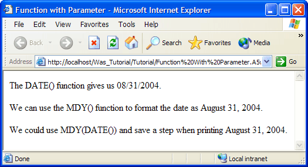

Understanding Functions
You may use two types of functions in your A5W pages:
functions that are part of the Xbasic language: e.g. date(), now()
functions that you write, known as User Defined Functions
Functions typically return a value that you will use in your page. Create a new A5W page named "Using an Xbasic Function" with the following content.
<html> <head> <meta name="generator" content="Alpha Five HTML Editor"> <title>Using an Xbasic Function</title> </head> <body> <%a5 dim dCurrentDate as D dCurrentDate = date() %> <p>The current date is <%a5 ? dCurrentDate %> </p> </body> </html> |
When you run this page you will see something like the following. You can see that the DATE() function assigned a date value to the dCurrentDate variable, which we subsequently displayed.

As the code sample above illustrates, you should place the Xbasic code that needs to be executed as part of the page between the <BODY> and </BODY> tags. The best place to put the functions that you write at the top of the page before the <HTML> tag.
Your Xbasic will be visible when you view a page from the WYSIWYG tab of the HTML Editor. Double-clicking any of the <%A% ... %> segments will open the code in a pop-up editor.

Using a Function with a Parameter
You can supply parameters to many functions. The number of parameters and their data types vary considerably. Refer to Xbasic Functions Listed Alphabetically, Xbasic Methods Listed Alphabetically, and Xbasic Functions and Methods Listed by Type to find the functions that you need and explanations of how to use them.
To show a function with a parameter:
Select the "Using an Xbasic Function" page in the Web Projects Control Panel.
Right click and select Duplicate.
Enter "Function with Parameter" and click Duplicate and OK.
Select the "Function with Parameter" page.
Right click and select Edit.
Display the Source tab.
Enter the following text into the page.
<html> <head> <meta name="generator" content="Alpha Five HTML Editor"> <title>Function with Parameter</title> </head> <body> <%a5 dim dCurrentDate as D dim cFormattedDate as C dCurrentDate = date() %> <p>The DATE() function gives us <%a5 ? CurrentDate %> .</p> <%a5 cFormattedDate = mdy(dCurrentDate) %> <p>We can use the MDY() function to format the date as <%a5 ? cFormattedDate %> .</p> <p>We could use MDY(DATE()) and save a step when printing <%a5 ? mdy(date()) %> .</p> </body> </html> |
Click
 .
.Click
 to close the HTML Editor.
to close the HTML Editor.Display the A5W Pages page of the Web Projects Control Panel.
Right click the "Function with Parameter" entry and select Publish (Local Webroot) and open. Your new page will appear in your Internet browser.
As "Function with Parameter" illustrates, the MDY() function needs a date parameter. The DATE() function produces a date value. So, you can save the output of the DATE() function into a date variable ( dCurrentDate ) and then give it to MDY()or you just give DATE()to MDY(). The result is the same either way.

Up to this point we have saved an edited page and then published it. This is the formal process required to make a page available to the outside world. But suppose the page is not ready to be public and that you want a quick look at it in your browser.
Select the "Function with Parameter" page in the Web Projects Control Panel.
Right click and select Edit.
Click
 to run the page in Live Preview.
to run the page in Live Preview.
Note that the page is running from the //localhost/LivePreview directory.
See Also